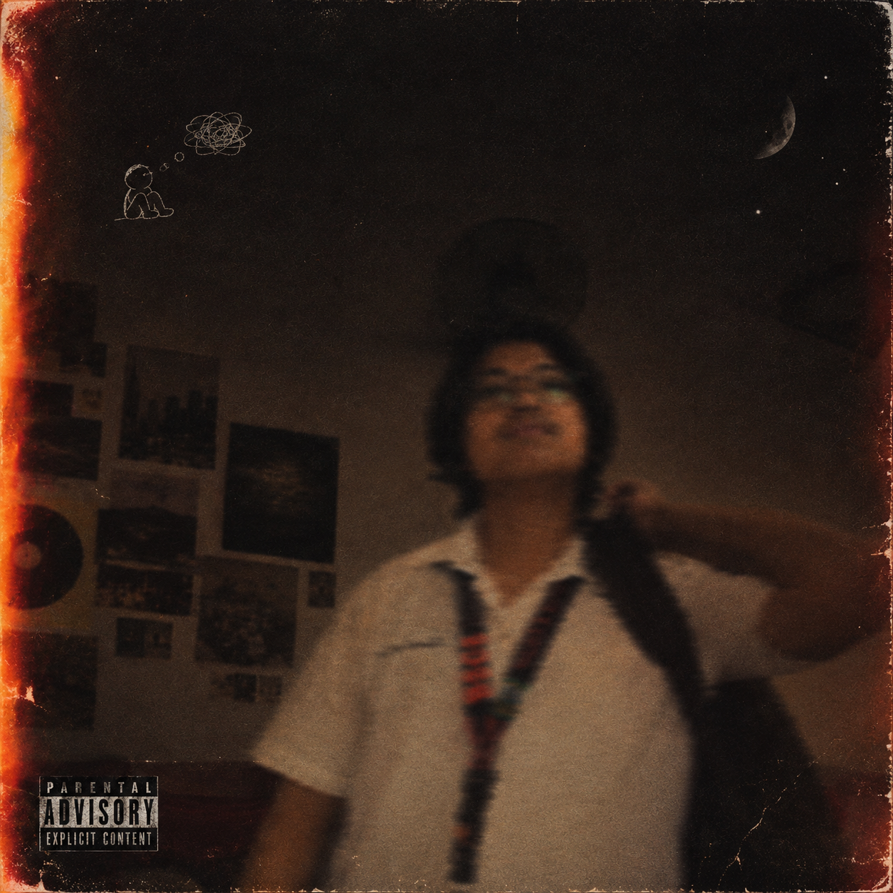
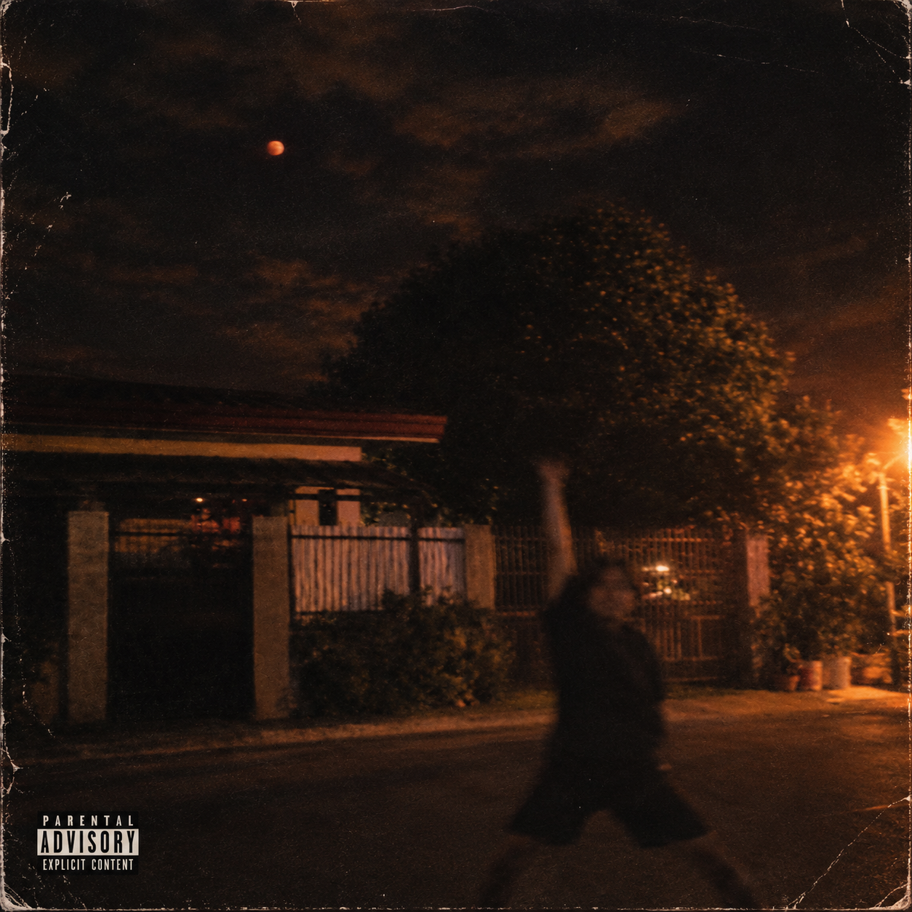
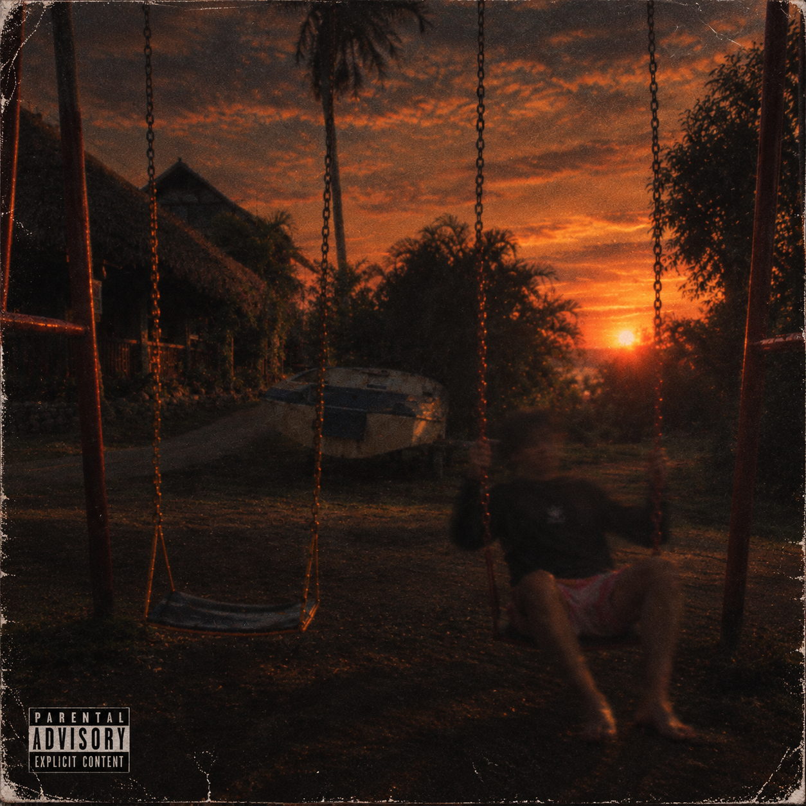
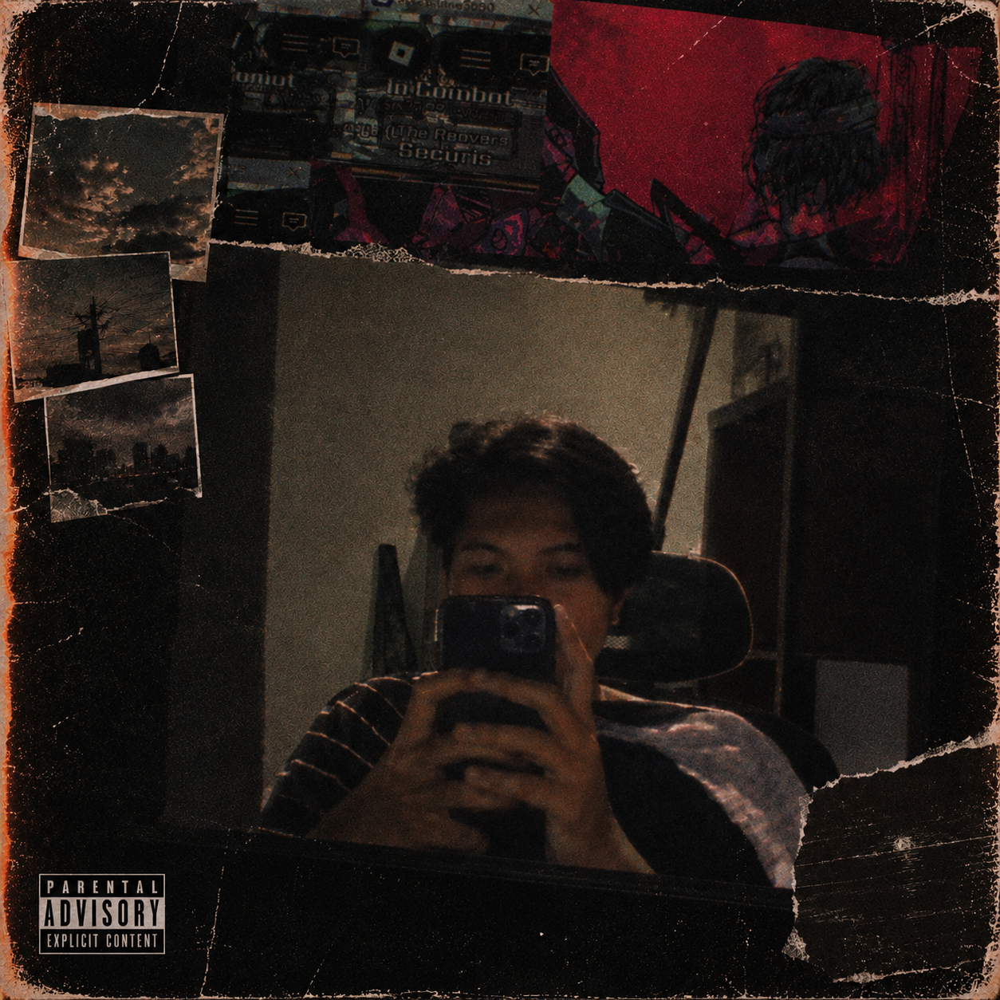

Genre: Indie
Filipino Indie Recommendation
Filipino indie grew out of bedrooms, dorm rooms, and small local scenes rather than major labels: lo-fi production, diary-like lyrics, and a DIY spirit that streaming made possible nationwide. This list gathers tracks that capture that intimate, homegrown sound.
Popular
-
1

Bawat Piyesa MunimuniA reflective folk-rock track from a band known for poetic, literature-leaning lyricism.
-
2
Hiwaga Tatin DC
A moody, mystery-tinged track that captures the intimate, homegrown side of Filipino indie.
-
3

Paraluman AdieOne of the breakout indie hits of the streaming era, turning Adie into a household name.
-
4

Nakauwi Na Ang Bandang ShirleyA wistful "coming home" song that's become a favorite among younger indie listeners.
-
5

Mahika Adie, Janine BerdinA duet follow-up that rode the wave of "Paraluman," pairing two of indie OPM's biggest voices.